Install Groovebox and make your first beat.
Library → Games → Groovebox turns the Q2 into a drum machine and step sequencer: sixteen sounds, each a sample, a synth or a live 909, 808, 303 or drum loop; a sequencer with rolls, chance and songs; and punch-in effects, echo and reverb. It isn’t in the firmware: it runs from the microSD card.
Your music stops while it’s open, and its sound goes to whatever Q2 Pod was playing through: the headphone jack, Bluetooth or a USB DAC. The volume starts where Q2 Pod’s was.
You need Q2 Pod 1.7.2 or later. The easy way is over Wi-Fi: open System settings → App Store and press Centre on Groovebox.
Or by hand:
groovebox.zip from github.com/DiamondBond/q2-groovebox/releases/latest..groovebox folder. On macOS and Linux the leading dot hides the folder; Cmd+Shift+. shows it in Finder.To open it from Home as well, choose Groovebox for Shortcut in System settings → Display → Appearance.
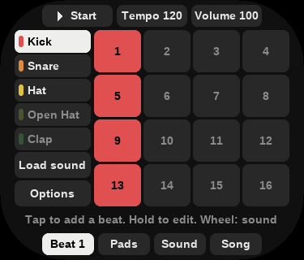
The Beat screenThat’s all you need to begin. The tabs along the bottom are the four screens: Beat (Chapter 2), Pads and Sound (Chapter 3) and Song (Chapter 5).
The line above the tabs always says what the keys do on that screen. A value is always a labelled box: tap it, then turn the wheel. Tempo and Volume work the same way: tap one and it lights, the wheel changes it, and tapping anything else hands the wheel back.
| Key | Does |
|---|---|
| Play/Pause | Start and stop |
| Wheel | What the line above the tabs says: the sound on Beat, the lit box on a page of boxes |
| Centre | Hear the sound; in Load sound, pick the row |
| Return | Back; where there is nothing to go back to, undo |
| Return, held | Quit |
| Prev / Next | Sound: the previous or next sound. Beat, on a long track: the page of steps. Otherwise the previous or next beat |
Tap in steps, then make each one your own.
The list on the left is your sixteen sounds, and the boxes are the steps of the one that is lit. A row of four is one beat. A coloured bar in the list means that sound has steps. Load sound gives the lit sound a new one (Chapter 4).
Hold a step to open it. Tap a box and turn the wheel to change it, and Centre lets you hear the result.
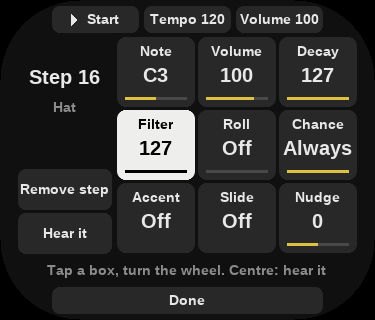
Inside a stepOptions, under the sounds, sets up the lit sound’s track.
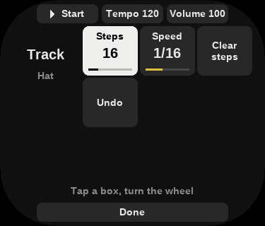
OptionsTracks of different lengths and speeds drift against each other, and a beat plays until its longest track ends.
Play it live, and shape each sound.
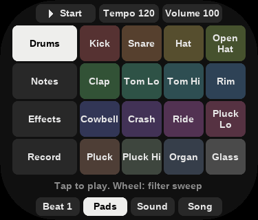
Drums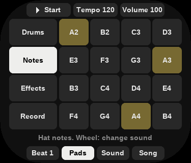
Notes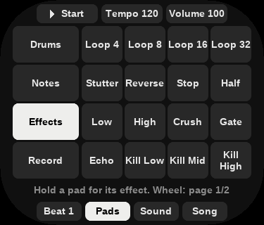
EffectsEffects are twenty-seven punch-in effects, in time with the tempo, on two pages: hold a pad to hear one, and the wheel turns the page.
Record starts the beat if it is stopped and writes what you play onto the steps, quantised, effects included. Record again or Stop ends the take, and Return undoes it. On Effects, with no take to undo, Return clears the beat’s effects.
The Sound tab has the lit sound’s controls, and More turns the page. Tap a box and turn the wheel; Centre plays the sound, so you can hear each change.
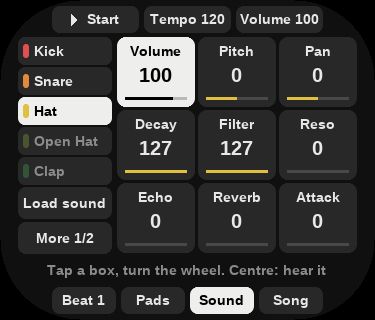
SoundA synth starts with its Preset, so the wheel walks through them. The 909, 808, 303 and drum loops show their own controls after Volume, Pitch, Echo, Reverb and Pan.
Swap in kits, synths, your own samples and recordings from your phone.
Light a sound on the Beat screen and tap Load sound. Use the wheel and Centre, or tap a row; Back or Return goes up one.
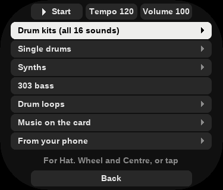
Load sound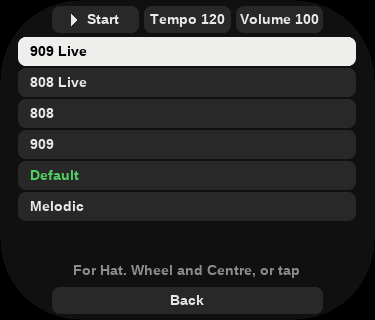
Drum kitsA kit is a folder of WAV files, so you can make your own on a computer.
.groovebox/kits on the card. The leading dot hides .groovebox on a Mac (press Cmd+Shift+. in Finder) and on Linux (press Ctrl+H in the file manager).01 Kick.wav, 02 Snare.wav and so on. The number sets the sound’s place in the list, and the rest of the name is what the screen shows.Use plain WAV files: 8, 16 or 24-bit, any sample rate, mono or stereo. Each sound plays in mono, and only its first twenty seconds are kept. A file over 24 MB stays silent, and with fewer than sixteen files the other sounds are empty.
Pick any audio file the Q2 plays, then choose what to do with it:
Trim it with Start and End. Loaded sounds are kept with the project, and a kit change clears them.
This shows an address. With the Q2 and the phone on the same Wi-Fi (the phone’s own hotspot works), open it in the phone’s browser and choose a recording, up to 64 MB. It’s saved to Music/Groovebox/Drops, and the Q2 goes straight to the choices above. The page exists only while that screen is open, under the code in its address.
Chain your beats into a song, and take it with you.
On the Song tab the boxes are your sixteen beats. Tap one to play it, at the end of the one playing. The wheel is the tempo.
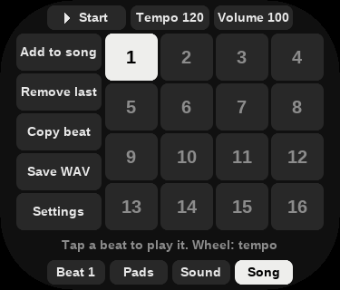
SongSave WAV renders the beat, or the whole song, to Music/Groovebox/1-<n>.wav, 44.1 kHz 16-bit stereo, without the volume or the sweep. It’s an ordinary music file: it plays in the player after Library → Update Local Music, and it stays when you remove Groovebox. Load it back from Music on the card to resample it.
Settings has the song’s swing, key and scale, and the effects on the mix: distortion, drive and compression, and the echo and reverb that the sounds’ Echo and Reverb send to.
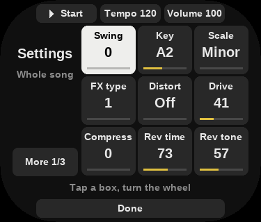
SettingsYour work lives in .groovebox/projects/ on the card, saved two seconds after a change and on the way out. It survives an update; removing Groovebox deletes it.
Keep Groovebox up to date, and find out what went wrong.
To update, press Centre on Groovebox’s Update row in System settings → App Store, or unzip a newer release over it. Your projects and your own kits stay.
To remove it, press its Installed row in the App Store twice, or delete the .groovebox folder. Your projects and kits go with it; the WAVs in Music/Groovebox stay.
.groovebox folder at its top level..groovebox/kits, with a name that doesn’t start with a dot..groovebox/freeze.txt, and it ends itself unless the screen comes back within two more.Getting help: report a problem at github.com/DiamondBond/q2-groovebox/issues, with what you did, what happened, and .groovebox/freeze.txt from the card if there is one.